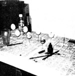

If you now operate-or have ever operated-a successful home business that was inspired by an article you read in MOTHER, tell us (in 500 words or less) when and where-and with how much "seed money"-you started your venture. Because if your story can be fitted into an upcoming installment of BOOTSTRAP BUSINESSES, you'll receive [1] the warm satisfaction of knowing that you helped someone else find the happiness you enjoy and [2] a free two-year new or renewal subscription to THE Mother Earth News'.
I just had to write and thank you . . . because good news is always such fun to share.
Back in Issue No. 48 (page 74), MOTHER ran an article called "Stained Glass", which really got me thinking about making my own such articles . . . since I'd always loved stained glass but could never afford to buy it. And-as luck would have it-the day after I read MOTHER's write-up, I received a circular in the mail announcing our community's local adult education classes ... which featured-to my surprise-a course in stained glass craft!
I immediately enrolled in the class, diligently practiced what I was taught, and quickly learned to produce some beautiful stained glass pieces. Then I became involved in a class project using both stained glass and pressed flowers, and it was this that started me on the way to my present moneymaking venture.
I soon began to experiment on my own a bit and presently developed some simple designs which attractively combined the stained glass and pressed flower materials I'd been using. And before I knew it, my designs were selling and shops were beginning to take an interest. Now my handicrafts are available from three local gift stores: Two buy my merchandise outright, the third purchases only on consignment . . . and recently a fourth shop has asked me to create a design exclusively for that establishment.
If ever there's a lull in the shop sales, I keep right on producing . . . and-as a result-I now have a large enough supply of my wares to display for sale at various arts and crafts fairs. I brought MOTHER with me to the last fair I attended . . . to read just in case I found sales to be slow. But-as it turned out-I hardly had time to look through her at all: Not only did my creations sell well, but-with my issue of MOTHER clearly in view-I was kept mighty busy, to boot, meeting fellow fans of THE Mother Earth News (restricted) !
In the two short months since I first set my part-time enterprise into operation, I've grossed a total of over $1,000 ... a figure which has more than covered all my business expenses, beginning with the fee for the stained glass course I took some six months back. I began my little business with no real artistic background whatsoever . . . but soon found that small ideas just naturally flourish when you're involved in a project that you really love.
At present, I can hardly keep pace with the demand for my stained glass/flower creations. And it business keeps booming as it has been of late, who knows ... my family's fondest dream-to live in a solar-heated underground home-could very soon become a reality!
Pat Uyeda
Port Washington, Wis.
I'm a teacher in Missouri's public school system, which leaves my summer months free to tend my family's one-acre homestead. So recently, when my wife and I decided to add onto our acreage in an effort to establish a berry farm, we knew we'd have to think of a way to earn the necessary down payment in my "idle" summer season. I wanted a job which would leave me independent and free from too rigid a time schedule ... and then I thought of MOTHER.
Several articles came immediately to mind: MOTHER's write-ups on starting a lawn mowing business in Issue No. 46 (page 81) and Issue No. 48 (page 92) and an article in MOTHER NO. 32 (page 24) on hauling with a pickup truck. These were just the thing for me, so I quickly surveyed my assets and calculated my initial investment. I already owned a pickup truck, riding mower, push mower, and a variety of other necessary hand tools for yard work. This left only the $16 cost of a one-month newspaper ad to supplement the various free advertising sources I had already put to use around town.
Next came the waiting ... would anyone answer the ads? You bet! And I've been doing lawn care ever since. A typical urban yard mowing brings in an average fee of $4.75 to $6.00 . . . and I've cleared several rather overgrown yards at a charge of $40 to $50 a day!
We've found, too, that hauling combines easily with the lawn care business. It's a good way to fill the few yardwork lulls . . . and quite often those who call for mowing end up needing a hauler too. We charge $12 a pickup load and frequently receive gratuities in the form of items that we find in the trash which other people have thrown away as "junk".
So you're responsible-MOTHER-for giving us not one bootstrap business, but two . . . and for us that great combination is bringing in the extra cash we need to buy that berry-raisin' land!
David C. Hinze
Rolla, Mo.
MOTHER's article "We Call 'Em Dough Babies" in Issue No. 48 (page 33) had quite a creative influence on me. I was in the market for a way to make some extra money that would require little or no initial outlay of cash . . . but It seemed that a good many folks in my area had already cashed in on dough-baby craft. Reading MOTHER's article, however, started my imaginative wheels a-grindin' . .. and before I knew it, I had become an "egger": a person who draws on eggs.
I started my little artistic operation with a very simple process: First I pierced a pinhole in the top of an egg (the smaller end) and a hole just large enough to fit over a 16-gauge wire in the other end. Then I emptied the hen fruit by squeezing air into it with a 3-cc syringe . . . and then filled the syringe with water to thoroughly rinse out the inside of the shell. (Much of the work of the syringe can be replaced by its no-cost standby, "ye old mouth" . . . but your aching jaws may pay the price.) Next I cleaned the outside of my egg (the store-bought product can be finger washed, but fruit fresh from the hen will require the rub of a soft toothbrush) . . .because if properly cleaned-both inside and out-the ovoid canvas will cause no problem of odor at all.
When the shell had dried out thoroughly, I set it upright-through its bottom hole-on a 16-gauge wire taped to my work table . . . and began to practice drawing on its rounded surface with an ordinary writing pen. Soon, however, I discovered the indispensability of a rapidograph pen and purchased a $12 Koh-i-noor with the smallest available point (4 X 0) .. . for detailed illustration. Now I start out my designs with the rapidograph and carefully fill in the drawings with shades of water colors and/or acrylic-tipped pens.
When the design is drawn, I seal the egg's top pinhole with gesso (easily applied with a toothpick) and mix up a polymer (EnviroTex) which I paint onto the egg and let dry for 6 to 12 hours.
This adds a super-high gloss to the shell and protects it as well .. . leaving the egg with a shiny sturdiness.
My repertoire of designs includes a different illustration for every month of the year, plus a varied assortment of other decorations ... some with just pictures and others with sayings as well. And every year I plan to change my patterns, making each of my eggs something of a collector's item.
I price my elaborate hen fruit-depending upon both the amount of work I've put into each one and whether I'm selling it to an Individual or to a store-at anywhere from $3.00 to $5.00 apiece. I've found that the decorated shells sell quickly in craft stores as well as in department stores, gift shops, and art galleries. (A good way to get your eggs displayed is to let shops know that you're willing to place your handicraft on consignment.)
Eggcraft naturally sells quickest during the Christmas and Easter seasons . . . but my creations do very nicely throughout the rest of the year as well. In my first seven months as an egger-in which I did not pursue the enjoyable pastime nearly as avidly as I might have-I earned a total of over $600.
On the whole, I've kept my business on a very small scale, dealing only with a handful of stores in one city. But with a desire to expand, I know for a fact that the eggcraft business could bring in a good deal more than just spending money!
Lynea S. Weatherly
San Antonio, Texas
When I read "A Small Discovery" in MOTHER NO. 49 (page 97), I became convinced that people will give away anything . . . so I decided to get in on the act. And since our local weekly advertising paper has a policy of giving free space to noncommercial advertisers who are buying or selling an item for less than $50 ... that's where I began. My first step was to take out an ad that read: "WANTED: Free Volkswagen . .." (on the off-chance that I'd get one which t could convert to electric power), and I tacked onto the end of the notice a request for refrigerators, air conditioners, and other such items.
Well-as it turned out-I didn't get my Volkswagen . . . but that's just about the only thing I wasn't given! The first day after I placed the ad, I got a washing machine, an air conditioner, a lawn mower, and a horde of other appliances. And since then I've been offered a deep freeze, two refrigerators, a lawn cart, a gas stove, sever al televisions, a good deal of furniture, and some lumber (many of these items in excellent shape) . . . and on occasion, I've even been offered cash for hauling something away.
Before long, of course, my lawn began to look like a junkyard, and I decided I'd better do something about it fast. Thus my Freebie Appliance business was born .. . In a little college town with a ready market for "castoffs". From the beginning I made it a policy to try not to refuse anything I'm offered, because you can never tell when something might turn out to be useful. A local fix-it shop takes unrepairables off my hands to use for parts ... and-besides-it seems the least I can do is to haul off a few lemons in return for all the really nice things I continually obtain for free.
Once, for example, I was given an air conditioner by an elderly lady who claimed it made a funny noise. When I got the machine home, I found it to be flawless ... not a sound that didn't belong. I sold that appliance for a whopping $60 . . . not a bad price for the hauling time I'd invested in it.
Moreover, my business has turned out to be self-perpetuating: Customers frequently become donors, and donors often become customers. On one occasion, I hauled off a really trashy refrigerator for a man who offered to service my pickup truck-in exchange-if ever needed. He asked that I keep my eye out for a working fridge for under E50 to replace the one he'd given me ... and I had one to sell him within a week.
This Freebie Appliance business of mine is still just getting under way ... but so far It's cost me only the use of my $75 pickup truck (a love story all its own) and $1.25 here and there to advertise in the paper those Items I sell for over $50.
So if you need a few bucks and you've got some spare time . . . try out a little ad like mine: "WANTED Free for the Hauling: Used Refrigerators, Air Conditioners, and Other Major Appliances." And if you drop me a line, I'll be glad to answer any questions [EDITOR'S NOTE: If you write to Al, please include $1.00 to cover postage and processing costs] and if anyone out there has a Volkswagen he or she wants to give away . . .
Al Andersen
The Green Mailbox
RR 2,
Ames, Iowa 50010
After teaching biology for almost nine years, my "retirement" to motherhood was beginning to make me a little restless. I had explored the earthworm and frog raising businesses . .. but had decided against them because of the initial outlay of cash that would be necessary.
And then-as fate would have it-my husband and I subscribed to MOTHER ... and received Issue No. 50. I'd soon read "We Homesteaded an Island" by David Vanderswaag (page 84) and knew just what I wanted to do. David's wife Cindy had found a way to earn the little "cash money" that she and her husband needed to run their homestead ... writing a weekly "Leisure Time" column for their local newspaper.
So I set out to strike up a deal with one of our area newspapers ... and before long, the arrangement was made. I bought a $10 garage-sale typewriter (which is still performing beautifully) . . . and now you'll find my column, weekly, on the farm page of our local paper. It includes everything from sunflowers, carob, and natural birthday parties to American Indians, creating wildlife habitats, and our 40-family natural food co-op. And once again, I'm using my science background as I research data for articles on plants and animals.
Since I was already a photography buff, it's been easy, fun, and lucrative to provide photos with each of my articles too. The paper furnishes and develops the film I use and-as an added bonus-returns the negatives to me each week.
My monthly paycheck comes in pretty handy...and I thoroughly enjoy the weekly writing challenge. So, a tip of the hat to the Vanderswaags and to MOTHER . . . for a little diversion from daughter Katie, from the chickens, ducks, horses, dogs, gardening, washing, cleaning, and cooking, and from all those other wonderful things that are part and parcel of the joys of rural living.
Marcia Ward
Urbana, Ohio
|
 |
|
|